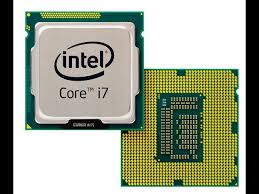
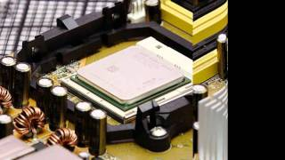
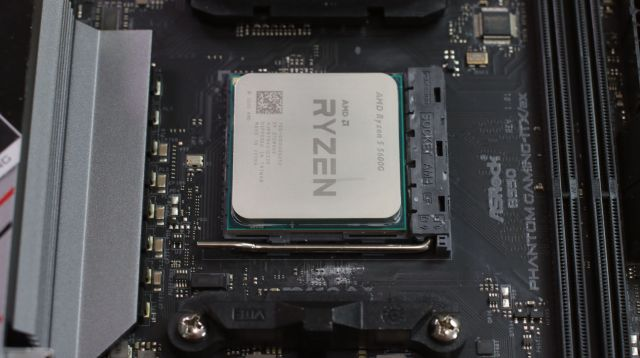

El procesador es como el cerebro de una computadora, es el componente que realiza los cálculos, toma decisiones y permite ejecutar tareas. Cada vez que se utiliza un programa, se juega a un videojuego o incluso simplemente se navega por internet, el procesador es el que se encarga de que todo funcione correctamente y lo más eficaz posible.
La velocidad y potencia de un procesador depende de varios factores, su versión, cantidad de núcleos y sobre todo su generación. Por ejemplo, con Intel Core, sus versiones son (Actualmente) i3, i5, i7, i9) mientras más alto el número, mejor es el procesador, pero se deben tener en cuenta los demás factores, como los núcleos. Los núcleos son como pequeños cerebros dentro del procesador, entre más núcleos tiene, más tareas puede realizar al mismo tiempo, por ejemplo, un procesador con 8 núcleos puede manejar más procesos a la vez que uno con 4 núcleos. Pero lo más importante es la generación del procesador, si la generación es baja, no va a importar la versión del procesador, por ejemplo, un Intel Core i3 de 12ª generación será más eficiente que un Intel Core i9 de 3ª generación, incluso si este tiene una menor cantidad de núcleos.
También hay diferentes marcas de procesadores, los más populares son Intel Core, AMD Ryzen y los chips de Apple. Por el momento, Intel Core cuenta con "i3, i5, i7, i9" desde la generación 1 hasta la 13, AMD Ryzen con "3, 5, 7, 9" desde la generación 1000 hasta la 7000 (a excepción de la 9 que su primera generación fue la 2000) y los chips de Apple con "M1, M2, M3" que no cuentan con generaciones, a más elevado el número del chip mejor es el procesador.
Los procesadores se dividen en las gamas baja, media y alta. Los de gama baja como "Intel Core i3 o AMD Ryzen 3", son adecuados para tareas simples como navegar por internet y trabajar en documentos sencillos. Los de gama media como "Intel Core i5 o AMD Ryzen 5", son de mejor rendimiento, ideales para juegos moderados y tareas más exigentes. Y los de gama alta, como "Intel Core i7/i9 o AMD Ryzen 7/9", son los mejores para tareas mucho más intensivas, como edición de vídeo, videojuegos de requisitos altos y tareas muy exigentes.
También, al final del número de la generación de los procesadores Intel y AMD, hay una letra. Esta letra indica las características especiales del procesador. como por ejemplo en el procesador "AMD Ryzen 5 3500U" la letra "U" indica que "el procesador es de bajo consumo energético".
De igual forma es importante tener en cuenta la frecuencia del reloj del procesador (GHz). La frecuencia del procesador, medida en Gigahercios (GHz), es una métrica que indica cuántas operaciones puede realizar un procesador en un segundo. Por ejemplo, una frecuencia de 2.1 GHz significa que el procesador puede ejecutar 2.1 mil millones de ciclos de operación cada segundo. Esta frecuencia es crucial porque determina la velocidad de ejecución de las tareas; cuanto más alta sea, más rápido podrá el procesador completar cálculos y manejar múltiples aplicaciones a la vez. igualmente hay que tener en cuenta que muchos procesadores modernos tienen tecnologías como "Turbo Boost", que permiten aumentar temporalmente la frecuencia para satisfacer demandas de procesamiento intensivas, asegurando un rendimiento óptimo en tareas como juegos o edición de video, lo que hace que entender esta especificación sea esencial al momento de elegir un computador.
Volver